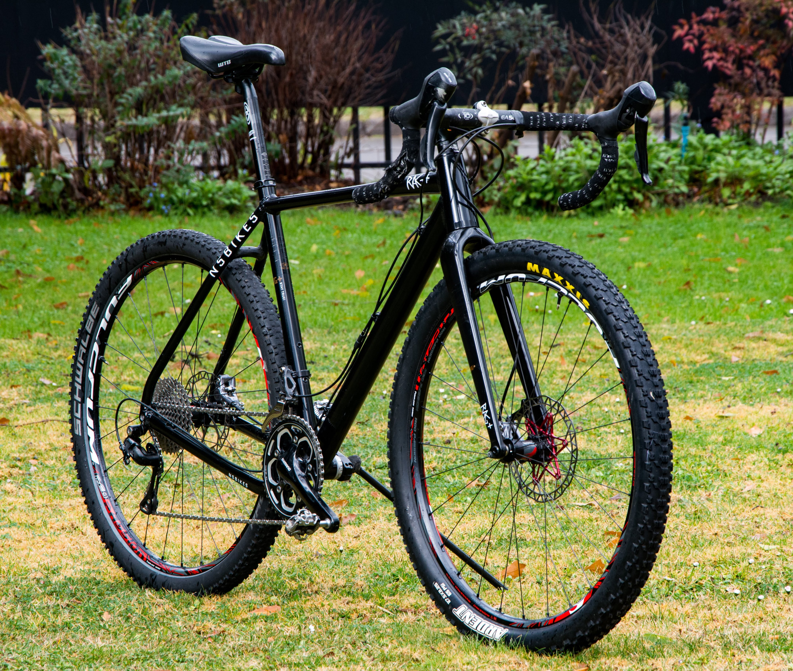

After expending most of my time working outdoors and wanting new challenges I joined Le wagon to become a full stack developer
FranciscaShe is an amazing ,caring person with a great heart. Is an animal lover and is always helping stray dogs giving them a happier life |
|
My Faborites Bikes |
|
|  |
Drop Bar BicyclesRoad bicycles are the faster of the all bicycle kind, What could be better than a road bike? with wider tires a "Gravel Bike" has geometry close to a road bike an with more off road capability More about Bicicles |